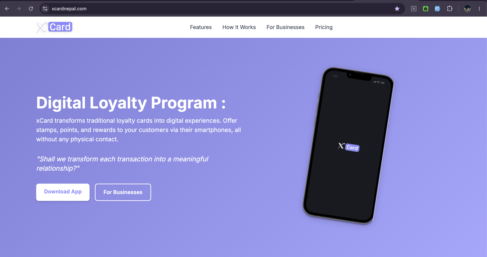
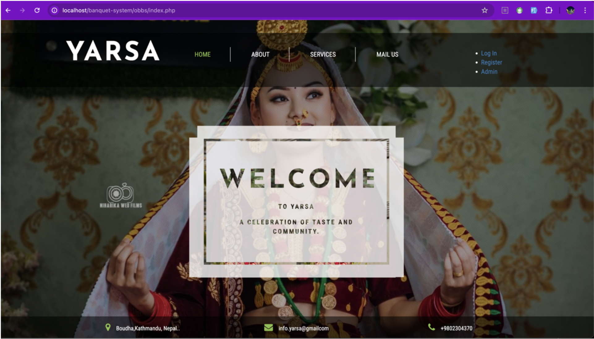
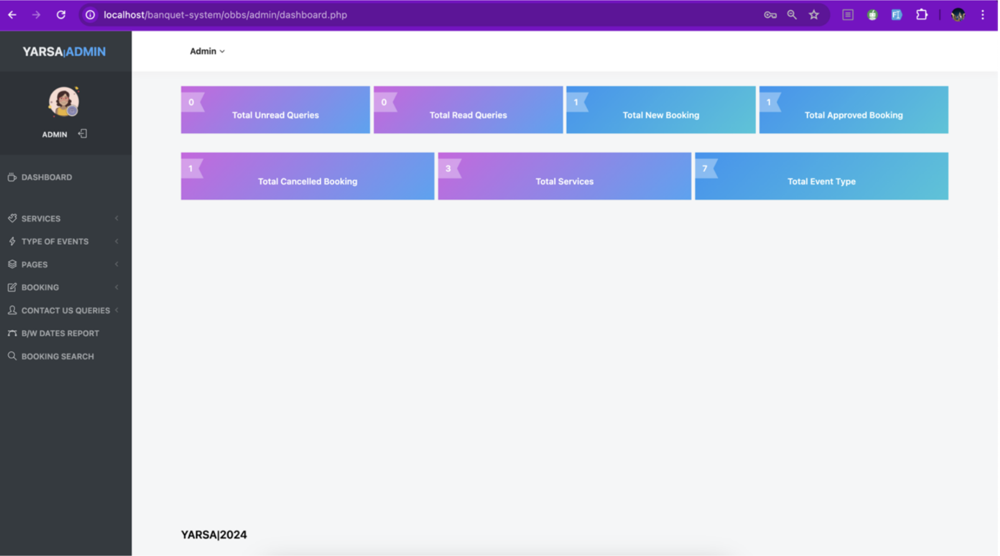

WELCOME TO MY E-PORTFOLIO
A BIM graduate currently pursuing a Master's in Information Technology, with professional experience in project coordination, documentation and team collaboration. I am passionate about technology, digital innovation and exploring how IT can solve real-world problems.
GET TO KNOW ME
I am an Information Management graduate and currently pursuing a Master's degree in Information Technology(MIT). My academic background My academic training has taught me a lot about information systems, how business processes work, database management and technology.
Alongside my academic journey, I have also accumulated hands on experience in industry, working as an Assistant Project Manager at Appsite Incorporation Pvt. Ltd., where I have assisted in coordinating development activities, managing tasks and preparing project documentation, as well as communicating with clients and tracking project progress with software and digital products.
I also have knowledge of HTML, CSS, Adobe Photoshop and Figma that allow me to explore both the technical and creative aspects of IT.
As a lifelong learner, I love working in teams, problem-solving and discovering new technologies.
To develop a successful career in the Information Technology industry by combining my academic knowledge, technical abilities and professional project management experience. My goal is to continue developing my skills and abilities in technical and managerial positions, and to be able to help solve innovative IT solutions.
I believe that successful technology projects require more than technical knowledge or expertise. Similarly,effective communication, proper planning, teamwork, creativity and continuous learning are equally important.
MY ACADEMIC JOURNEY
MIT | Second Semester
Institution: Himalayan College of Management
University:Kuala Lumpur University of Science and Technology
Institution: Nagarjuna College Of Information Technology
University: Tribhuwan University
MY TECHNICAL KNOWLEDGE
HTML
Webpage structure, HTML elements and semantic markup.
CSS
Styling, layouts, colours, typography and basic website design.
Figma
Wireframing, interface design, prototyping and visual layouts.
Adobe Photoshop
Image editing, graphic design and visual content creation.
ClickUp
Practical experience in task assignment, project organization, progress tracking or monitoring and coordination of a team.
MY WORK & EXPERIENCE
My projects reflect my academic learning and practical exposure to software development, business applications and digital solutions.
Professional IT Project | Appsite
Role: Assistant Project Manager
xCard is a digital loyalty management platform designed to replace traditional physical loyalty cards. It enables businesses or merchant to manage customer loyalty programs through digital stamps, points, QR code tracking and reward redemption.

Traditional physical loyalty cards can be lost or damaged, while manual tracking can be difficult. xCard provides a digital alternative through electronic loyalty cards, QR tracking and rewards.
Enhanced knowledge and understanding of software project management, digital product development, client communication, task management and teamwork.
Academic Project | BIM
An academic project focused on providing an online platform for customers or users to explore banquet services and handle booking requests.


Gained knowledge of system analysis, requirements understanding, database concepts and the development of technology-based business solutions.
MY PROFESSIONAL JOURNEY
IT INDUSTRY EXPERIENCE
Kathmandu, Nepal
I have gained hands-on experience in the IT industry by working as an Assistant Project Manager on software and digital product projects.
My role involves supporting project activities, coordinating development teams, managing tasks and keeping communication between clients and project team members.
Organise and conduct project activities to ensure smooth operations.
Using ClickUp to organize, assign and monitor project tasks.
Communicating with developers and tracking development activities.
Organizing project-related documents and maintaining organized project records.
Interpersonal skills, understanding needs and relaying project progress.
Monitoring task completion and following up on pending activities.
Presenting project features and functionalities through project demonstrations.
GET IN TOUCH
Thank you for visiting my e-portfolio. I am interested in connecting with IT professionals, exploring new opportunities and collaborating on technology-related projects.
Name: Sabina Tamang
Location: Kathmandu, Nepal
Email: thesabinatmg@gmail.com
Phone:9802304370
I look forward to learning, growing and contributing to the world of Information Technology.